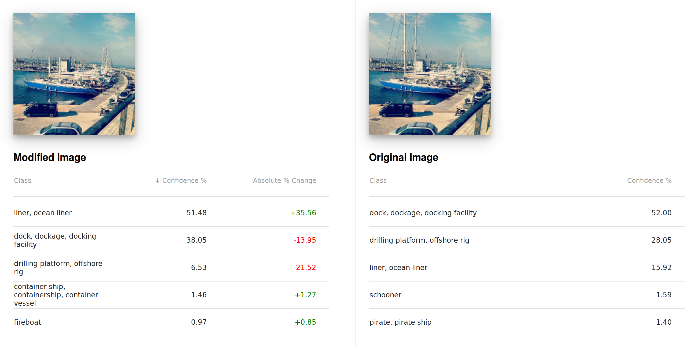
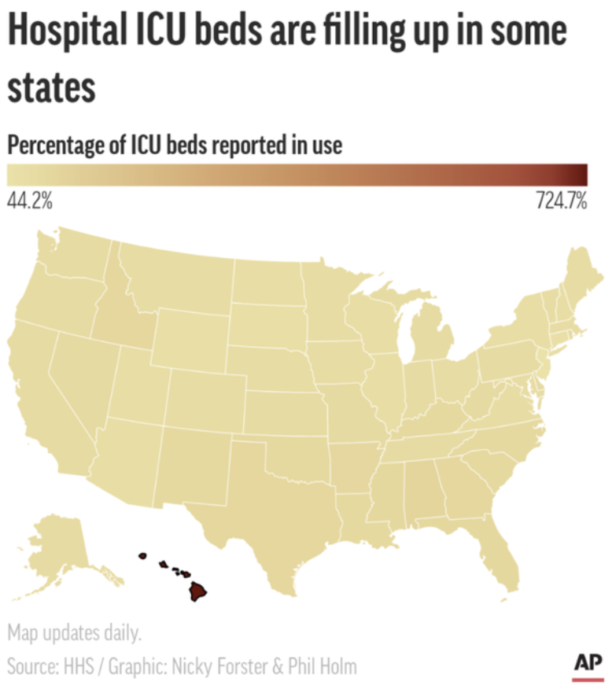

Nahyun Kwon
Hello, my name is Nahyun [Na-HyəN], a Ph.D. student in Computer Science at Texas A&M University.I am a member of HCIED (HCI Engineering & Design) Lab, under the supervision of Dr. Jeeeun Kim.
I decided to take this Data Visualization class to learn about various visualization methods for different data types when I write an academic paper. I am also interested in interactive data visualization using libraries such as D3, so I hope I can try a really interesting project in this class!
Assignments
Assignment 1: Helpful & Unhelpful Data Visualization

Interactive Classification for Deep Learning Interpretation
I found this project's data visualization method is particularly insightful.
There are many ways to highlight the region of interest by the human workforce.
In this project, the users can modify the image itself with inpainting algorithm to remove some image features they would like to exclude from the deep learning model's attention.
Their system shows the modified prediction results in real-time along with the modified image, which is very robust way to let users understand how prediction results are changing upon their modification.
I think this will be also very good for educating the basic idea of the relationship of deep learning model's understanding and the region of interest as an input.

Hospital ICU beds are filling up in some states
While searching for some bad visualization examples in 'dataisugly' subreddit, I found a really bad example that does not give any insight.
Since they set the scale from 44.2% to 724.7% which is too large, all the regions are just having the same color.
In this scaling that does not make sense, we cannot get any idea about what's the difference of regions, because most of them appear to be within the small range around 44.7%.